第一期定了项目怎么建、怎么配。本期定谁能登录、谁能管账号，以及登录之后能看见哪些数据、能使用哪些功能。 菜单权限管功能能力：侧栏进不进得去、页内按钮能不能做。数据权限管看得到哪几行。两套同时成立，缺一不可。
业务对象是主账号和它名下的子账号。主账号在方舟 Admin 里配置，见 FZ-A-13。一个主账号是一组数据的边界：项目、TG 公共池配置、网站配置都只在本组内共享。不同主账号之间，这些配置互相看不见。
数据分三档。项目数据按「负责项目」分配。TG 采集里的公共池配置属于主账号，不按项目分配。素材在审核通过之后进入平台公共素材池，这份池跨主账号，并且包含进了项目的料、只进了 TG 的料、只留在池里的料。
项目配置字段见《项目创建 / 列表 / 详情》。待审核和公共池的可见范围以本稿为准。门槛上的按钮、垃圾、判重、分发和转编辑见《采集 / 素材 / 文章》。
| 功能ID | 模块 | 名称 | 描述 | 备注 |
|---|---|---|---|---|
| FZ-A-13 | Admin | 主账号配置 | 在方舟 Admin 创建、编辑、停用主账号，并可重置其密码和谷歌验证。开户后默认拥有全部菜单权限。 | 不在运营端，也不在 refactor-demo。本稿不配截图。 |
| FZ-A-01 | 登录 | 账号密码与谷歌验证码 | 已绑定谷歌验证的账号填写账号、密码、6 位动态码后，进入 Telegram 二次验证。 | 未绑定则先去绑定页。停用子账号不能登录。 |
| FZ-A-02 | 登录 | 谷歌验证绑定与重置 | 首次或被重置后扫码绑定。本人可在个人资料重置。有子账号管理权限的人可重置他人的验证器。 | 未绑定完成不能进工作台。 |
| FZ-A-03 | 登录 | Telegram 登录验证 | 所有账号的二次安全校验。密码和谷歌验证通过后，再验证该账号登记的 Telegram 手机号。 | 主账号、子账号都要走。与负责哪个项目无关。 |
| FZ-A-04 | 当前账号 | 修改密码与个人资料 | 左下角账号菜单。本人改密码、改显示名、重置自己的谷歌验证。 | 登录名、CMS 标识、Telegram 号码在资料里只读。 |
| FZ-A-05 | 子账号 | 列表、创建与编辑 | 三步：个人信息 → 负责项目 → 岗位与权限。CMS 标识选填。Telegram 手机号必填。 | 有菜单者看见本主账号下全部子账号。 |
| FZ-A-06 | 子账号 | 停用、重置密码、重置验证器 | 卡片上重置他人密码、重置他人谷歌验证、停用或启用。 | 与本人改密码、本人重置验证器分开。 |
| FZ-A-07 | 权限 | 菜单权限 | 岗位或自定义勾选决定侧栏与页内按钮。按钮名按各页真实操作列出。勾了该页任一按钮即可进入，进入不单独勾选。不能勾出超过自己已有的权限。 | 主账号默认全部功能。 |
| FZ-A-08 | 权限 | 数据权限总则 | 项目数据、主账号共享配置、平台公共素材池三档，以及和菜单权限怎么叠加。 | 细则见 FZ-A-09～12。 |
| FZ-A-09 | 数据 | TG 采集的数据范围 | 公共池配置在主账号内共享。绑在项目上的采集号跟着项目走。一个 TG 号只在一个项目或公共池。 | 主账号之间互相看不见。 |
| FZ-A-10 | 数据 | 网站采集的数据范围 | 有网站采集菜单即可看本主账号全部网站和采集记录。保存时只能勾自己负责的项目或公共池。 | 列表不按项目拆行。 |
| FZ-A-11 | 数据 | 素材的数据范围 | 只有触发人工复核的才进待审核，且只看来源是本主账号的料。没触发的自动进入平台公共素材池。通过后各主账号都能看，进了项目的也留在池里。 | 范围条上「全平台」与「项目」同一排。按钮、垃圾和判重见第三部分。 |
| FZ-A-12 | 数据 | 权限对工作台与其余业务数据的影响 | 工作台只覆盖负责项目和本主账号的 TG 公共池。文章、审核按项目切。公告全员可见。 | 工作台页面不在本期，只定可见范围。 |
FZ-A-13
主账号由方舟 Admin 配置。方舟 Admin 是对内后台，运营端没有开户入口，重构 Demo 里也不做这个页面。本稿只把能力写清楚，不配截图。
Admin 可以创建主账号、修改显示名、停用或启用、重置密码、重置谷歌验证。创建时必须登记 Telegram 手机号。创建完成后，对方用该登录名和初始密码到运营端登录。首次登录若尚未绑定谷歌验证，走 FZ-A-02，绑定后再走 FZ-A-03。
Admin 写入主账号的登录名、显示名、密码、Telegram 手机号、启用状态和谷歌验证绑定状态。运营端登录只读取已启用的主账号，并在 FZ-A-03 读取该手机号。停用标记同时拒绝该主账号名下子账号的登录。本记录不进入 refactor-demo 的本地数据。
FZ-A-01
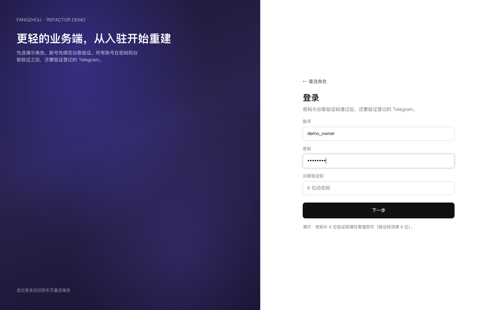
未登录访问业务页时进入登录页。登录页使用方舟现有登录版式（浅色分栏），不使用深色「绑定 Telegram」那套皮肤。 已绑定谷歌验证的账号填写账号、密码、6 位动态码，提交后进入 FZ-A-03。主账号和子账号都走这一步。
新开户尚未绑定，或谷歌验证已被重置时，密码校验通过后不要求填写动态码，进入 FZ-A-02 绑定页。绑定完成前不能进入工作台。
校验账号、密码和验证器绑定状态。通过后若要绑定，写入「未完成绑定」并打开绑定页。 密码与谷歌验证通过后，暂存本次登录身份，等 FZ-A-03 通过后再写入已登录并进入工作台。已登录会话带上账号类型、账号 id、显示名和菜单权限。
FZ-A-02
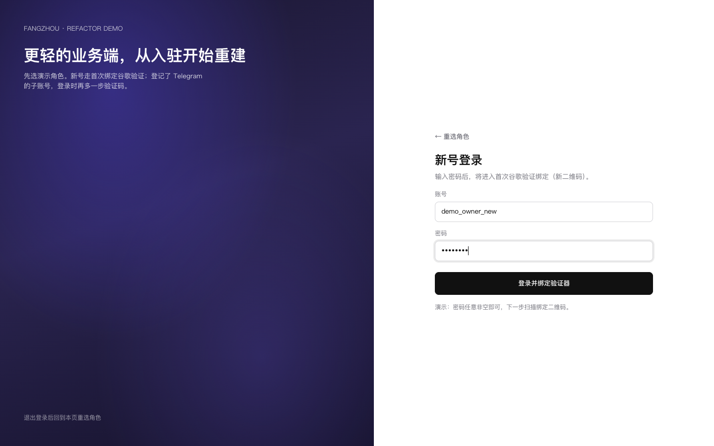
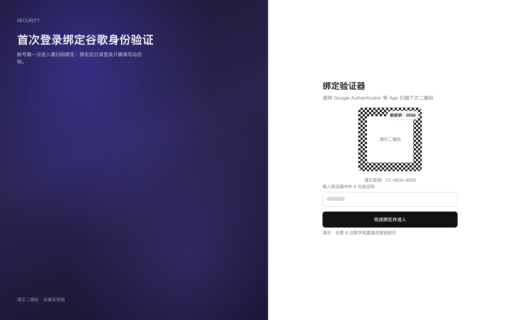
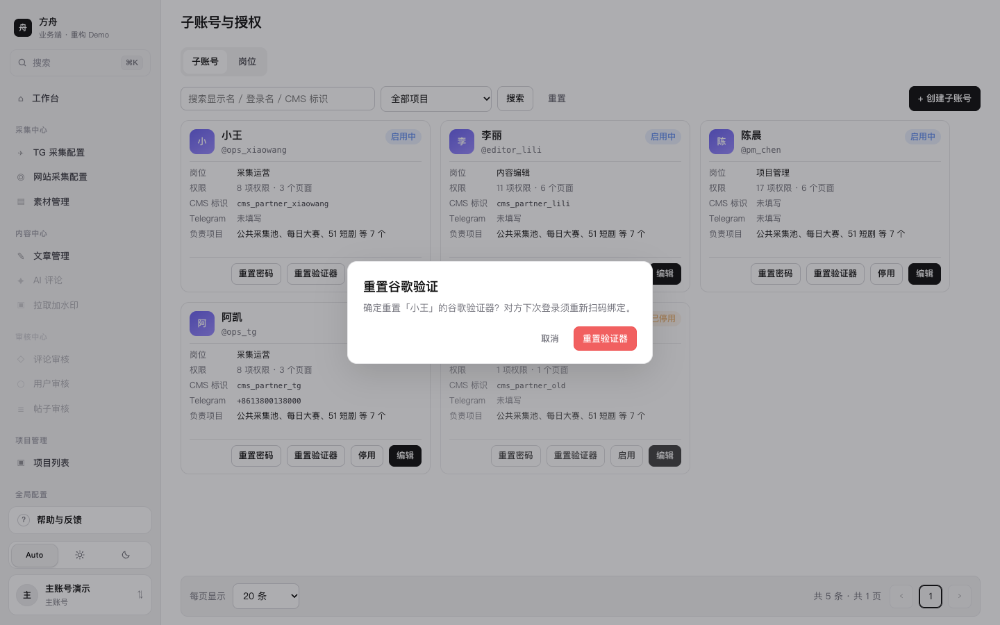
绑定页展示新的二维码和演示密钥尾号，用户在验证器 App 扫码后填写 6 位动态码，或按页上说明直接完成绑定。完成后验证器状态改为已绑定，并进入 FZ-A-03。绑定完成前不能进入工作台。
重置有两条入口，效果相同：该账号的谷歌验证变为未绑定，下次登录走绑定页，不接受旧动态码。 本人从个人资料里的「重置我的谷歌验证」进入，确认后当前会话立刻打开绑定页。 他人从子账号卡片的「重置验证器」进入，只影响被重置的那个子账号，当前操作者的会话不变。
绑定成功写入该账号已绑定，并记录本次密钥标识。本人重置把当前账号标为未绑定并打开绑定页。 重置他人只把目标子账号标为未绑定。对方下次登录读取到未绑定后进入绑定页。
FZ-A-03
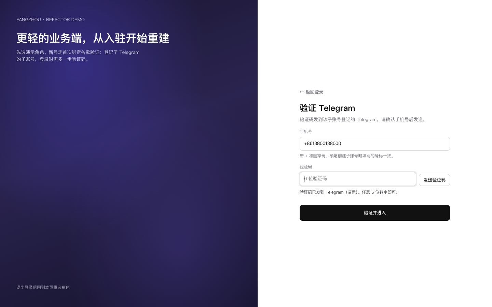
这是登录的二次安全校验。主账号和子账号在密码与谷歌验证通过之后，都要再验证一次登记在该账号上的 Telegram 手机号。与负责哪个项目无关。
这一步核对输入的手机号是否就是登记号码，向该号码发送验证码，再提交 6 位验证码。通过后进入工作台。界面沿用登录页，不单独做深色绑定屏。
登录读取该账号已登记的 Telegram 号码做比对。发送与校验通过后，把 FZ-A-01 暂存的登录身份写为已登录，进入工作台。 主账号号码在 Admin 维护，子账号号码在子账号资料里维护。登录页不能改登记值。
FZ-A-04
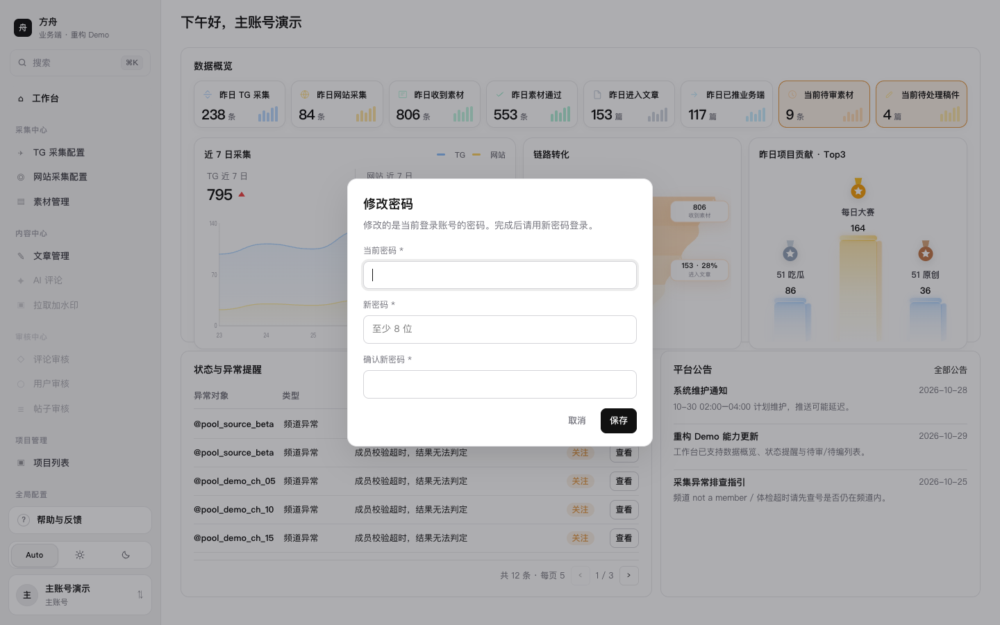
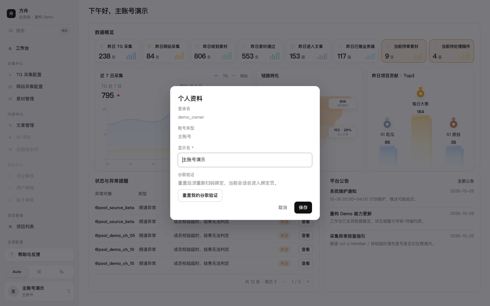
已登录后，左下角账号菜单有「修改密码」和「个人资料」。两条都打开弹层，不是侧栏页面。 修改密码只改当前登录账号。个人资料改显示名，并提供重置自己谷歌验证的入口（重置规则见 FZ-A-02）。
修改密码只更新当前账号的密码字段。个人资料更新显示名；子账号同时回写子账号记录上的显示名。CMS 标识和 Telegram 本弹层只读，不提交。
FZ-A-05
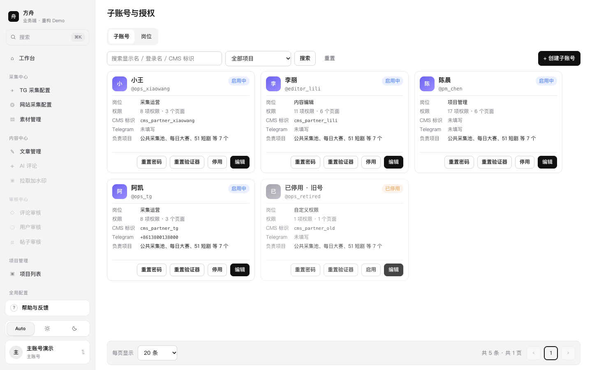
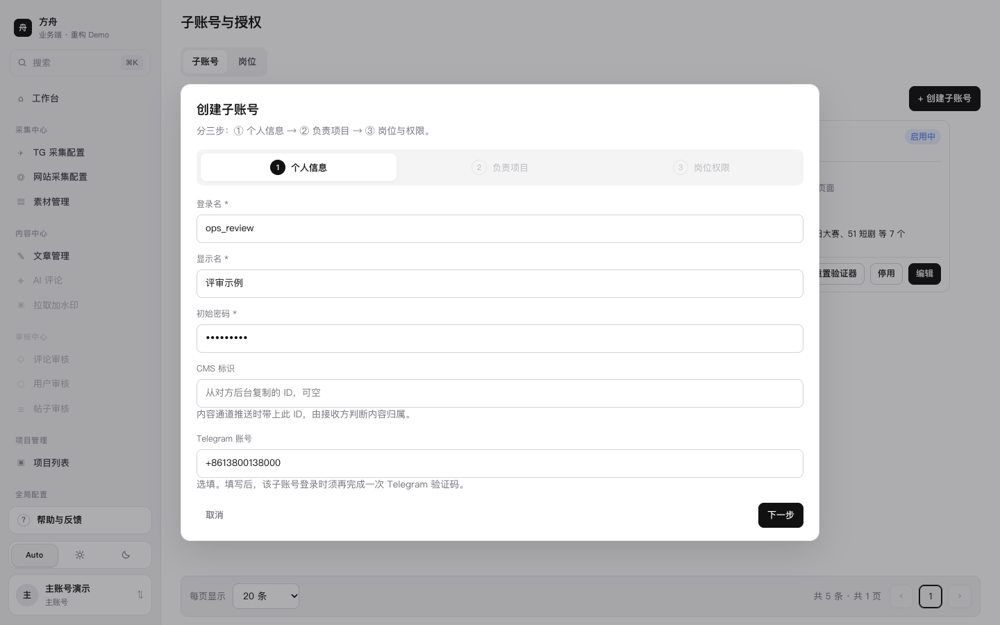
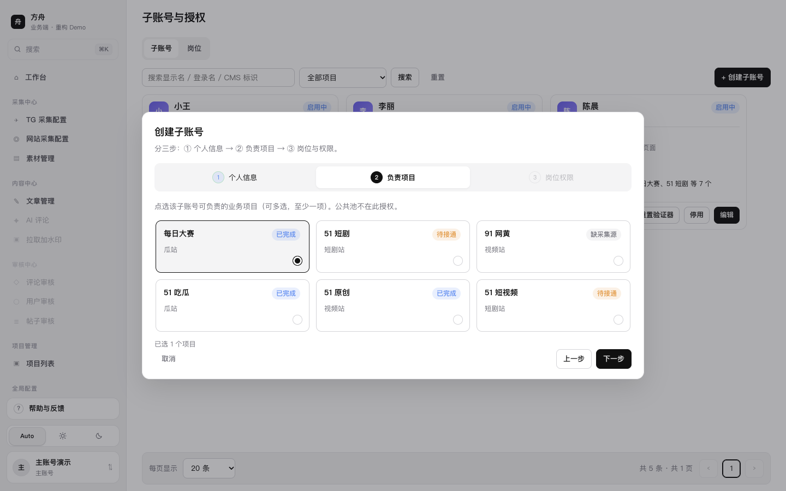
侧栏「子账号与授权」进入子账号列表。有此菜单的人看到本主账号下的全部子账号，包含自己和其他人创建的。 创建和编辑用同一个三步弹层：① 个人信息 → ② 负责项目 → ③ 岗位与权限。新建必须按顺序走。编辑已填过三步，可点步骤条在已到达的步骤之间切换。
子账号记录属于当前主账号。保存写入登录名、显示名、密码（仅新建）、CMS 标识、Telegram 手机号、负责项目、岗位名和权限勾选。列表只查询本主账号的子账号。登录读取这条 Telegram 做二次验证。
FZ-A-06
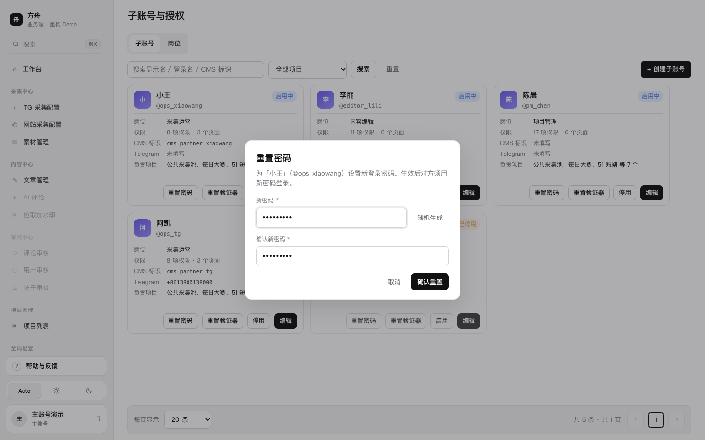
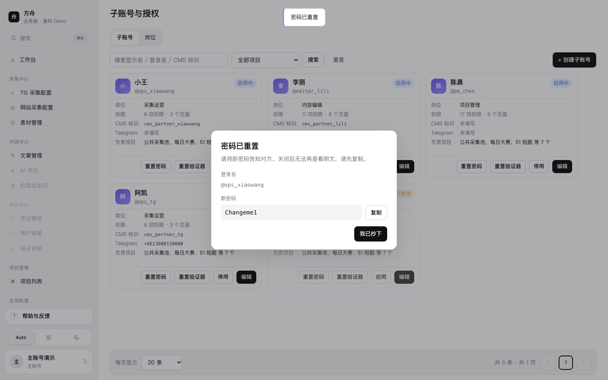
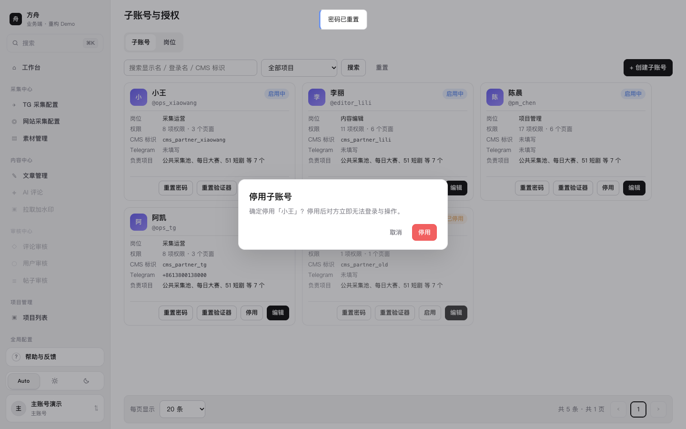
这三项都在子账号卡片上，作用于别人，不作用于当前登录人自己的密码和验证器。自己的密码和验证器走 FZ-A-04、FZ-A-02。 重置密码后对方必须用新密码登录。重置验证器后对方下次登录进入绑定页。停用后对方立即不能登录。
重置密码覆盖该子账号的密码字段，并向操作者返回一次明文。重置验证器只把该子账号的验证器标为未绑定。停用写入停用标记，登录接口读取该标记后拒绝。
FZ-A-07
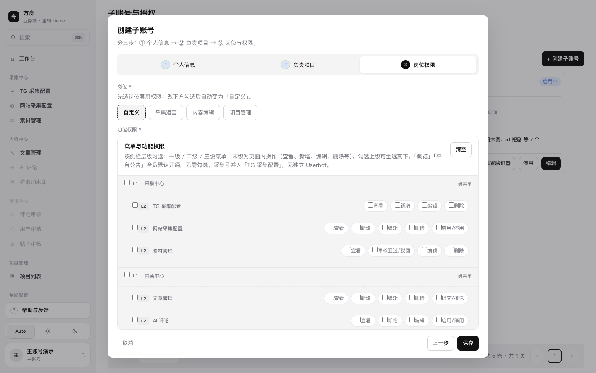
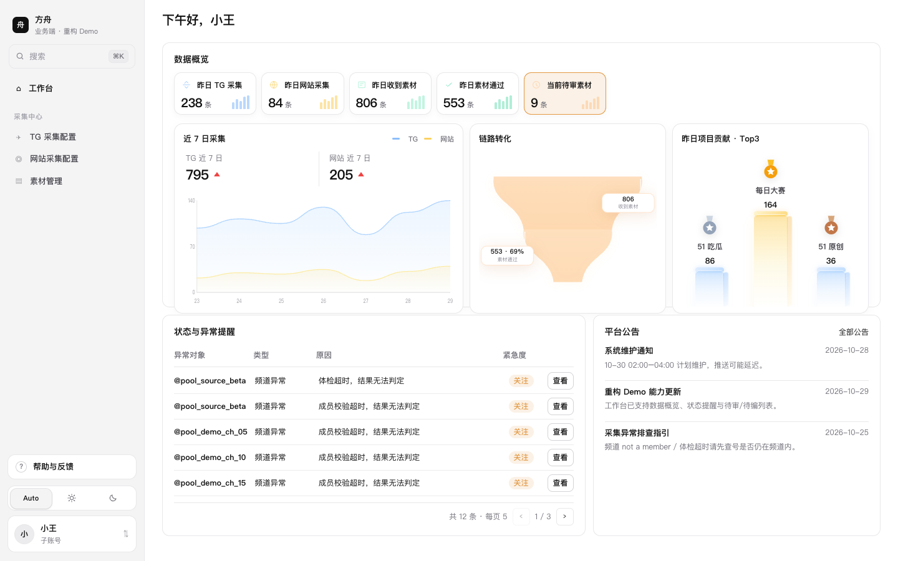
菜单权限决定功能能力：侧栏是否出现入口，页内是否出现对应动作。它不决定数据行的范围。数据范围见 FZ-A-08 及之后各节。 主账号默认拥有全部菜单和页内动作。子账号按岗位包或自定义勾选。勾选结果同时用于侧栏和按钮。
岗位记录保存名称和权限 id 列表，属于当前主账号。子账号保存自己的一份权限 id 列表，可以来自岗位再微调。进入页面不写入单独的查看项，该页只要有一个按钮权限就能进入。 登录会话带上这份额权限。侧栏和按钮只读会话里的权限，不按项目重新计算功能有无。
FZ-A-08
进入页面之后，列表里出现哪些行由数据档决定。功能能不能点仍由 FZ-A-07 决定。两套条件都过，操作才作用到那一行。
| 档 | 包含什么 | 谁看得到 | 是否按负责项目分配 |
|---|---|---|---|
| 项目数据 | 项目配置、内容通道、绑在该项目上的 TG 采集号和频道、进了该项目的素材、文章、审核、AI 评论、拉取加水印 | 本主账号全部可见。子账号只看见自己负责的项目 | 是 |
| 主账号共享配置 | TG 采集的公共池（采集号、频道、路由）；本主账号下的全部网站和采集记录；本主账号下的全部子账号 | 同一主账号下、具备对应菜单的人。其他主账号看不见 | 否 |
| 平台公共数据 | 审核通过之后的平台公共素材池 | 全平台具备素材管理菜单的人，主账号和子账号看同一份 | 否 |
列表接口带上当前主账号 id。项目类列表再按负责项目过滤。TG 公共池和网站列表只按主账号过滤，不再按项目过滤行。平台公共素材池在审核通过之后不再按主账号过滤行。
FZ-A-09
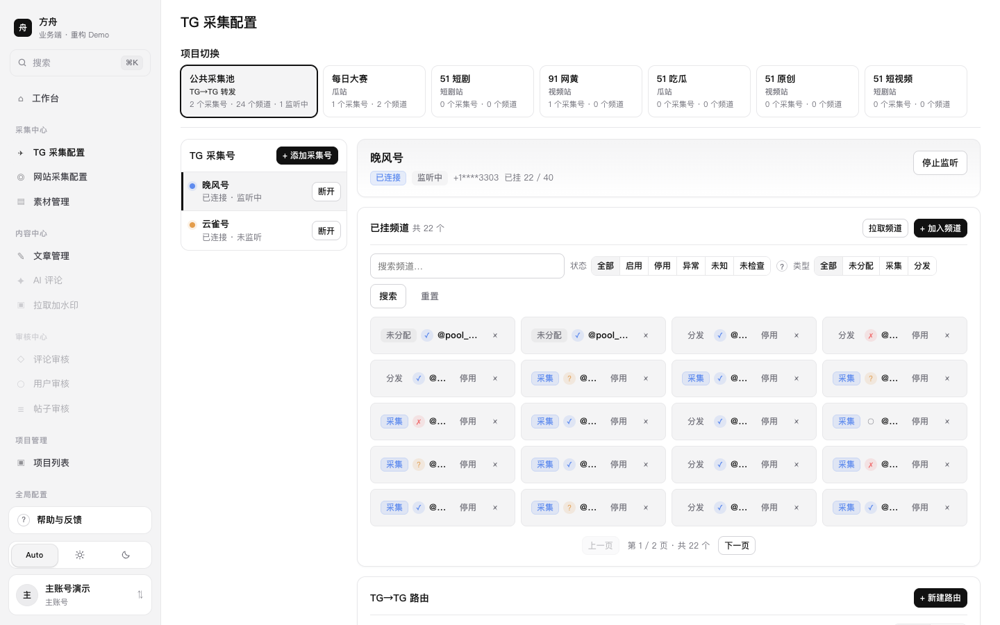
TG 采集页里有两堆数据。公共池配置是主账号共享配置：采集号、频道和推送路由不按负责项目拆开。绑在业务项目上的采集号和频道是项目数据，跟着那个项目走。 一个 TG 号只进入一个项目，或只进入该主账号的公共池，不能同时出现在多个项目里。
公共池配置挂在主账号上，不挂在某个业务项目 id 上。项目采集号挂在项目 id 上，读取时同时校验主账号和负责项目。 自动分发只读取来源主账号自己的路由。
FZ-A-10
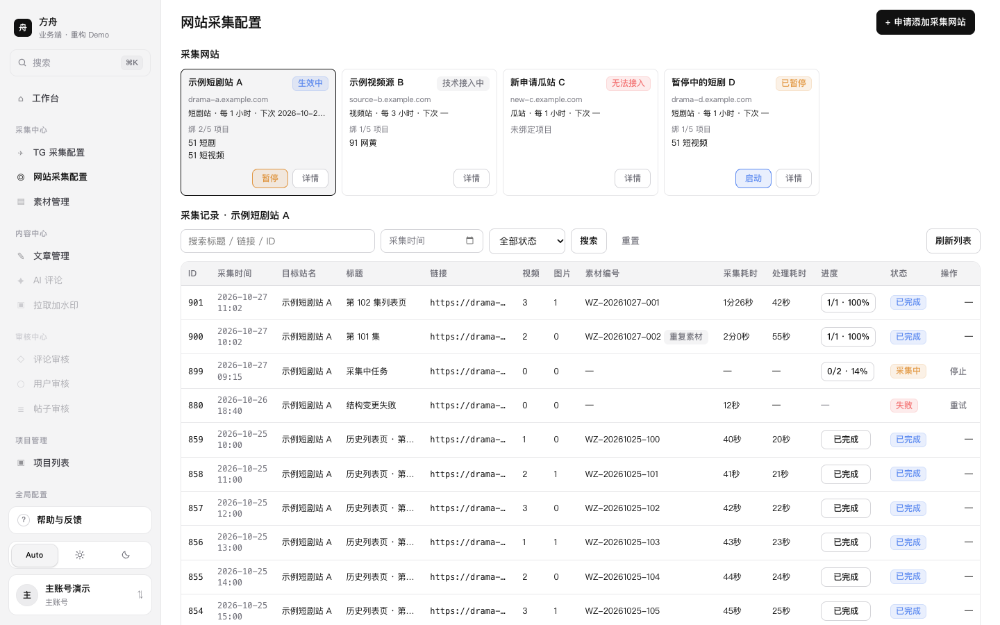
网站按「一个网站一行」管理，一个网站可以同时勾选多个项目，所以列表不按项目拆开，也不按负责项目隐藏行。 有网站采集菜单的人，看到本主账号下的全部网站，以及这些网站的采集记录。保存配置时，只能把网站勾到自己负责的项目，或勾到公共池。
网站配置和采集记录挂在主账号上。项目绑定是网站上的多值字段，保存时只允许改动当前用户有权的那些项目 id。 无权项目 id 原样保留。采集输出写入素材管道，不在网站表里按项目复制一行。
FZ-A-11
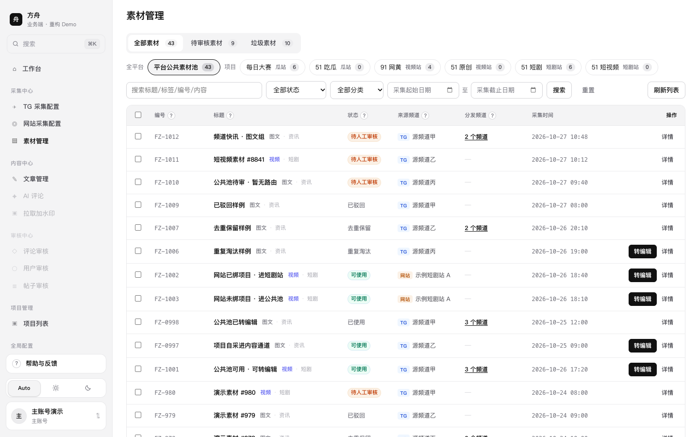
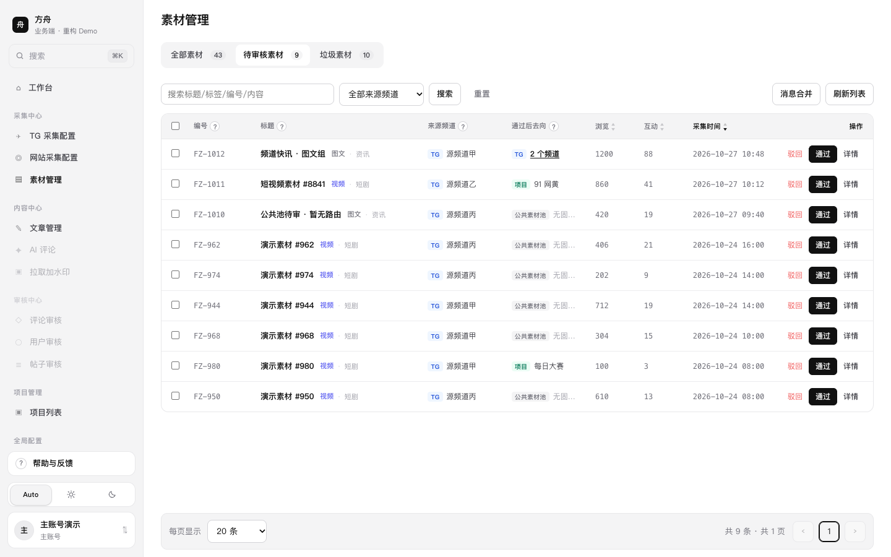
不论来自 TG 还是网站，不论配置人是主账号还是子账号，采进来的素材先做审核判定，不是一律进入「待审核素材」。判定沿用现网广告过滤和初筛。TG 在入库前还会用正文加评论文本打一次广告分。网站素材入库后走同一套初筛。
进「待审核素材」只在触发了人工复核时。触发条件有三条：广告分达到人工复核线、还没到高风险拦截线；初筛的清晰度、热度或完整性低于阈值；视频没有音轨。待审核只对来源主账号及其子账号可见。其他主账号看不见尚未通过的料。
没触发上述条件、并且初筛通过的，不进待审核，自动进入加工，完成后进入「平台公共素材池」。素材同时含图片和视频、且现网「图文自动通过」开着时，跳过清晰度、热度、完整性，按通过处理。全局审核开关关闭时，跳过广告过滤和初筛子项，同样直接加工进池。没有媒体文件的不进池。
现网默认人工复核线 6 分、高风险线 10 分，初筛三项阈值默认 0.1。分数和阈值仍由现网广告规则和筛选配置维护，本期不改配置入口。广告分达到高风险线、命中直接拦截、口播被判成广告、图片被多模态判成广告、没有媒体文件、媒体全部下载失败或文件无效，直接拦截。这些料不进待审核，也不进平台公共素材池。
人工点通过，或上面说的自动通过之后，这条素材进入「平台公共素材池」。池子是全平台一份。进了项目的、只进了 TG 的、没有进 TG 只留在池里的，都在这一份里。进了项目不会再从池里消失。 有项目归属的，进入池子后同时出现在对应项目中。项目里看到的是池中的一份，不是另一条被搬走的记录。
来源主账号若已配置 TG 路由，素材进入平台公共素材池时按那组频道自动推送。池中展示已分发的频道。其他主账号能看见分发结果，不能改频道配置。通过之后如何分发到项目池、何时自动或手动转编辑，见《采集 / 素材 / 文章》。
采集写入一条素材，来源主账号 id 固定为配置所属的主账号。广告分和初筛决定下一状态：触发人工复核则写成待审核，读取接口按来源主账号过滤；初筛通过则跳过待审核，加工完成后写成平台公共素材池，并按来源主账号的 TG 路由写下分发频道；直接拦截则写成驳回，两边列表都不返回。 人工通过同样把状态改为已进入平台公共素材池。若采集配置或转编辑带了项目 id，项目关系与池记录并存。 其他主账号的全部素材查询只返回已进入池的记录。项目查询在池记录上按项目 id 再过滤，并套用负责项目。
FZ-A-12
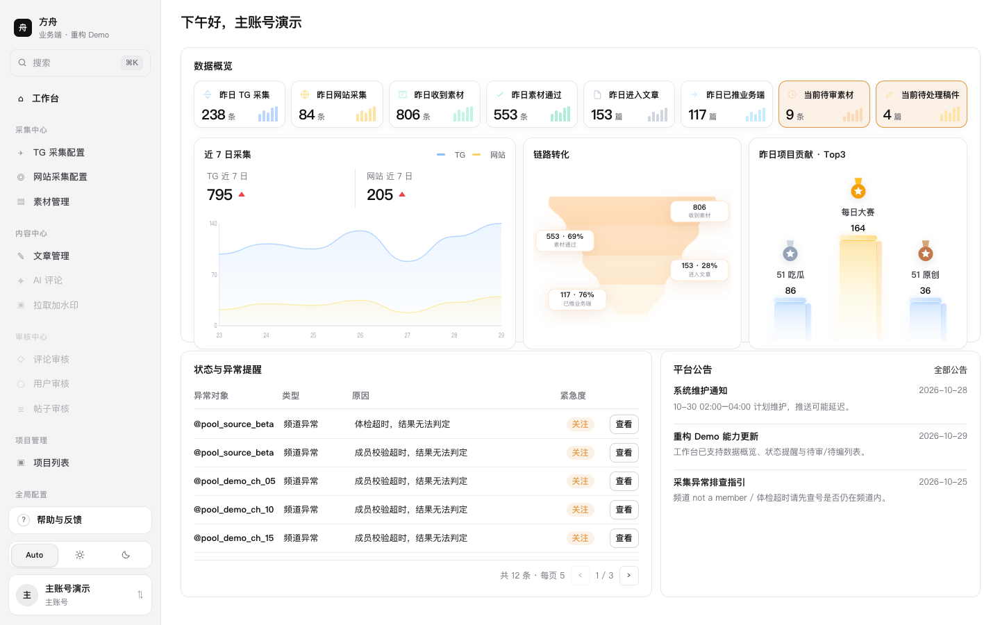
这里只定数据权限切到工作台上的范围。项目类数字、异常和待办只覆盖当前用户负责的项目，加上本主账号的 TG 公共池。待审核数量只计来源是本主账号、且按 FZ-A-11 处于待审核的素材。平台公共素材池的全平台总量不进入工作台统计。
文章、评论审核、用户审核、帖子审核、AI 评论、拉取加水印按项目数据切。子账号只处理负责项目里的行。公告全员可见，不按项目也不按主账号拆。
工作台读取项目类数据时，范围等于负责项目，另加本主账号 TG 公共池。待审核计数等于 FZ-A-11 本组待审核条数。 文章和审核接口带主账号 id 与负责项目 id 列表。公告接口不带项目过滤。
| 功能ID | 验收标准 | 结果 |
|---|---|---|
| FZ-A-13 | 只在方舟 Admin 配置主账号，运营端和 Demo 都没有这个页面。可创建、改显示名、停用和启用、重置密码、重置谷歌验证。创建时 Telegram 手机号必填。开户后默认全部菜单权限。停用后该主账号及其子账号不能登录。本稿无截图。 | ☐ |
| FZ-A-01 | 已绑定账号须填对密码和 6 位动态码，然后进入 Telegram 验证。未绑定不出现动态码并进入绑定页，绑定完成后再验 Telegram。停用子账号提示「该子账号已停用，无法登录」。密码错误提示「密码错误」且不进入下一步。 | ☐ |
| FZ-A-02 | 绑定完成前不能进工作台。绑定完成后进入 Telegram 验证。本人重置后立刻进入绑定页。卡片「重置验证器」只影响该子账号，确认文案含对方下次须重新扫码。重置不清空密码和 Telegram。 | ☐ |
| FZ-A-03 | 主账号和子账号在谷歌验证或绑定之后都出现本步。号码须与该账号登记值一致。子账号不一致提示「该手机号未在此账号登记，请联系主账号」，主账号提示「请联系管理员」，且不进入。界面为现有登录页。 | ☐ |
| FZ-A-04 | 修改密码校验当前密码、8 位、两次一致、不能与旧密码相同，成功 Toast「密码已更新，下次请用新密码登录」。资料可改显示名，登录名、Telegram 只读，子账号的 CMS 也只读。左下角显示名立即更新。 | ☐ |
| FZ-A-05 | 有菜单者看到本主账号全部子账号。新建三步不可跳。Telegram 在第一步必填，格式须为带国家码手机号。负责项目至少一项。权限至少一项，且不能超出操作者自身权限。卡片操作整组靠右。 | ☐ |
| FZ-A-06 | 重置他人密码后展示一次明文并可复制。停用后该子账号不能登录，启用后恢复。重置验证器的 Toast 为「已重置谷歌验证，对方下次登录须重新绑定」。 | ☐ |
| FZ-A-07 | 页内按真实按钮勾选，不单列查看。勾了该页任一按钮即可进入。无菜单则侧栏没有入口，直链提示「当前账号没有此功能权限」。授权不能勾出自己没有的项。手改勾选后岗位变为「自定义」。 | ☐ |
| FZ-A-08 | 三档与矩阵一致。子账号项目列表、筛选和转编辑目标都不出现未分配项目。跨主账号看不到对方项目和 TG 公共池配置。 | ☐ |
| FZ-A-09 | 有 TG 菜单即可看本主账号整份公共池，不看负责项目。项目采集号只跟随负责项目。一个 TG 号不能同时进两个项目。其他主账号看不见本组配置。 | ☐ |
| FZ-A-10 | 有网站菜单即可看本主账号全部网站和采集记录。保存时只能勾自己负责的项目或公共池。他人已绑项目只读，不能勾上也不能取消。列表不按项目拆行。 | ☐ |
| FZ-A-11 | 只有广告分到人工复核线、初筛三项不达标、或视频无音轨，才进待审核，且只有来源主账号本组可见。待审核只有「通过」和「驳回」。直接拦截进垃圾，不进待审核也不进池。通过后进平台公共素材池。范围条同一排。转编辑在项目池，每个项目一次。 | ☐ |
| FZ-A-12 | 只验收可见范围。工作台只覆盖负责项目和本主账号 TG 公共池，不含全平台池总量。待审核数字只等于本组待审核条数。文章和各类审核只出负责项目。公告全员可见。 | ☐ |